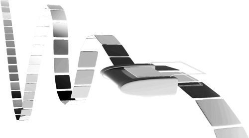
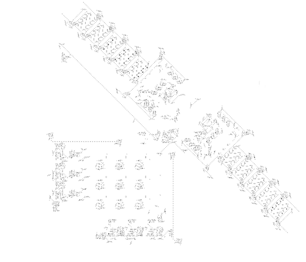
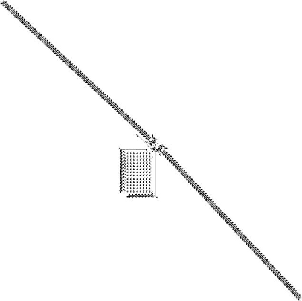

Turing Machines
Turing machine 1 is a hypothetical device, consisting of “...an infinite memory capacity obtained in the form of an infinite tape marked out into squares, on each of which a symbol could be printed. At any moment there is one symbol in the machine; it is called the scanned symbol. The machine can alter the scanned symbol and its behavior is in part determined by that symbol, but the symbols on the tape elsewhere do not affect the behaviour of the machine.” (In the words of Alan Turing, in the article which originally described it).
| With the right modifications, a Turing machine can be made to simulate any computer algorithm. Based on the clues presented until now, it was suspected that the Game of Life has such a capacity. Building a Turing machine inside the game universe would answer the question once and for all, and in 2000 Paul Rendell successfully built such a device, describing it in great detail in the paper “A Turing Machine in Conway’s Game of Life” (30/08/01). |
 |
| This is an example of a specific machine, meaning that it only runs a certain program, in this case one which duplicates a pattern of 1s. However, Rendell designed it such that in could be extended to become a Universal Turing Machine. |
 |
Turing machine 2 - In 2010 Rendell returned to his original Turing Machine design and, by greatly extending its memory capacity (using “stack cells” connected together), managed to create the Universal Turing Machine. It is capable of simulating all other Turing Machines, thus running any conceivable program.
| Of course, as a consequence, every aspect had to be scaled up: one cycle of the UTM takes 79*240 generations, compared to the 46*240 needed for the TM. The new machine has 252192 cells, 13 possible states and 8 tape symobls. |
 |